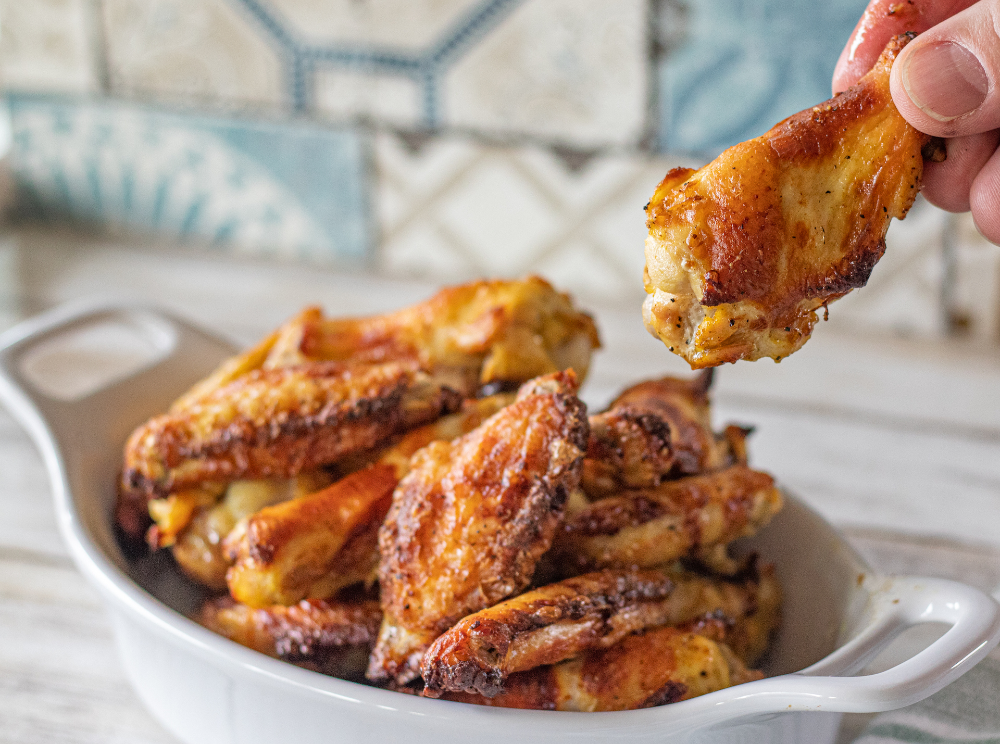

Pickle Brined Wings

Description
These wings are a simple addition that will elevate any gameday platter. You might be thinking pickle brined wings sounds disgusting, but I can guarentee these will surprise you.
This recipe calls for 2 pints of pickle juice, but if you dont have enough you can substitue in some salted water. You will want to prepare your brine 18-24 hours in advance if possible but if you are making these day of try to brine them as early as possible.
Ingredients
- chicken wings
- pickle juice
- salt,pepper,garlic powder mix
- dried dill
Steps
- Place raw chicken wings in a large container or bag and cover completely with pickle juice. Allow to brine for 18-24 hours.
- Remove chicken from container and wash for 30 seconds to remove excess salt
- Seperate the drums from flats and discard wing tips
- Pre-heat air fryer to 400. While heating pat wings completely dry
- Once dry, season your wings with SPG mixture and dill
- Cook for 20 minutes, flipping once half-way
- Once done, season with additional dill. Enjoy immediatly!